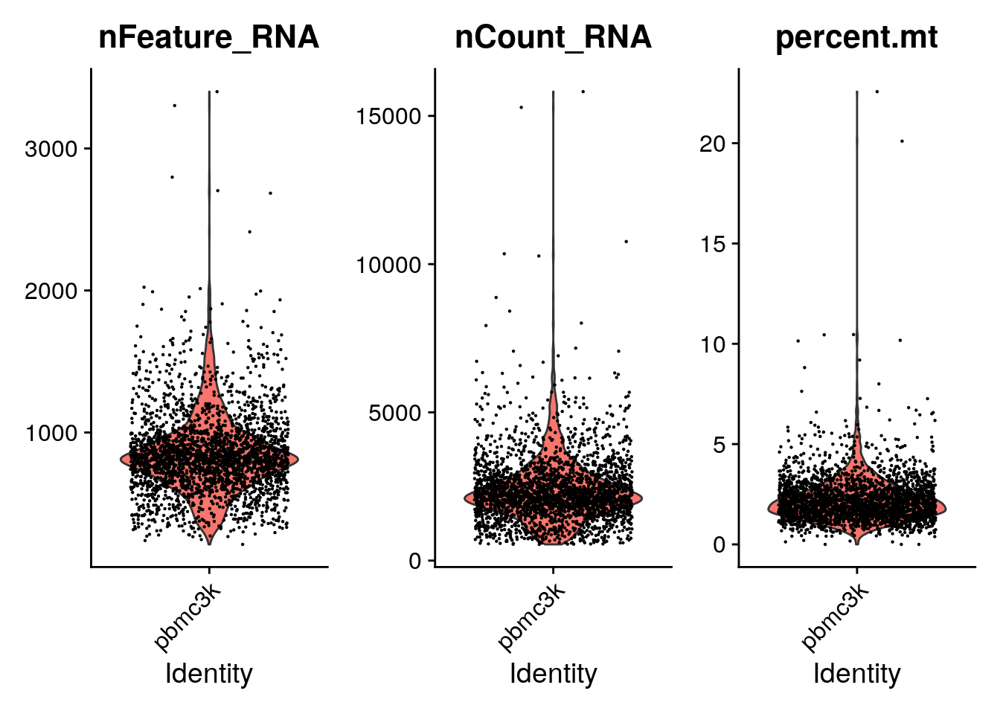
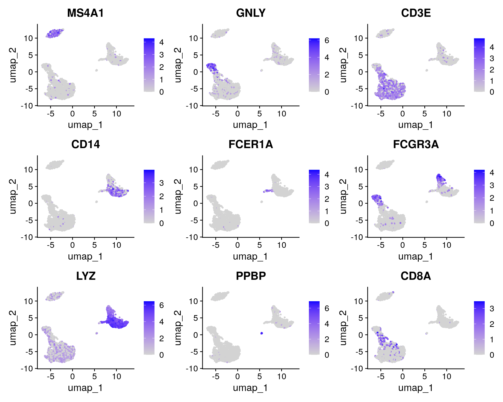

Getting started with Seurat
2024-03-20
Last updated: 2024-03-20
Checks: 7 0
Knit directory: muse/
This reproducible R Markdown analysis was created with workflowr (version 1.7.1). The Checks tab describes the reproducibility checks that were applied when the results were created. The Past versions tab lists the development history.
Great! Since the R Markdown file has been committed to the Git repository, you know the exact version of the code that produced these results.
Great job! The global environment was empty. Objects defined in the global environment can affect the analysis in your R Markdown file in unknown ways. For reproduciblity it’s best to always run the code in an empty environment.
The command set.seed(20200712) was run prior to running
the code in the R Markdown file. Setting a seed ensures that any results
that rely on randomness, e.g. subsampling or permutations, are
reproducible.
Great job! Recording the operating system, R version, and package versions is critical for reproducibility.
Nice! There were no cached chunks for this analysis, so you can be confident that you successfully produced the results during this run.
Great job! Using relative paths to the files within your workflowr project makes it easier to run your code on other machines.
Great! You are using Git for version control. Tracking code development and connecting the code version to the results is critical for reproducibility.
The results in this page were generated with repository version 64ac12f. See the Past versions tab to see a history of the changes made to the R Markdown and HTML files.
Note that you need to be careful to ensure that all relevant files for
the analysis have been committed to Git prior to generating the results
(you can use wflow_publish or
wflow_git_commit). workflowr only checks the R Markdown
file, but you know if there are other scripts or data files that it
depends on. Below is the status of the Git repository when the results
were generated:
Ignored files:
Ignored: .Rproj.user/
Ignored: r_packages_4.3.0/
Ignored: r_packages_4.3.2/
Untracked files:
Untracked: analysis/breast_cancer.Rmd
Untracked: code/multiz100way/
Untracked: data/pbmc3k/
Note that any generated files, e.g. HTML, png, CSS, etc., are not included in this status report because it is ok for generated content to have uncommitted changes.
These are the previous versions of the repository in which changes were
made to the R Markdown (analysis/seurat.Rmd) and HTML
(docs/seurat.html) files. If you’ve configured a remote Git
repository (see ?wflow_git_remote), click on the hyperlinks
in the table below to view the files as they were in that past version.
| File | Version | Author | Date | Message |
|---|---|---|---|---|
| Rmd | 64ac12f | Dave Tang | 2024-03-20 | Normalisation, variable genes, and scaling |
| html | 3c41e26 | Dave Tang | 2024-03-20 | Build site. |
| Rmd | d5ab5a8 | Dave Tang | 2024-03-20 | Basic filtering |
| html | 5de3e6c | Dave Tang | 2024-03-19 | Build site. |
| Rmd | 0e1dfa9 | Dave Tang | 2024-03-19 | Sparse matrix |
| html | 944e5f2 | Dave Tang | 2024-03-19 | Build site. |
| Rmd | ae0ea42 | Dave Tang | 2024-03-19 | Getting started with Seurat |
This post follows the Peripheral Blood Mononuclear Cells (PBMCs) tutorial for 2,700 single cells. It was written while I was going through the tutorial and contains my notes. The dataset for this tutorial can be downloaded from the 10X Genomics dataset page but it is also hosted on Amazon (see below). The PBMCs, which are primary cells with relatively small amounts of RNA (around 1pg RNA/cell), come from a healthy donor. There were 2,700 cells detected and sequencing was performed on an Illumina NextSeq 500 with around 69,000 reads per cell. To get started install Seurat by using install.packages().
install.packages("Seurat")If you get the warning:
‘SeuratObject’ was built under R 4.3.0 but the current version is 4.3.2; it is recomended that you reinstall ‘SeuratObject’ as the ABI for R may have changed
re-install the SeuratObject package using a repository
that has an updated copy. The same goes for the htmltools
package.
install.packages("SeuratObject", repos = "https://cran.ism.ac.jp/")
install.packages("htmltools", repos = "https://cran.ism.ac.jp/")
packageVersion("SeuratObject")
packageVersion("htmltools")Load Seurat.
library("Seurat")Loading required package: SeuratObjectLoading required package: sp
Attaching package: 'SeuratObject'The following object is masked from 'package:base':
intersectpackageVersion("Seurat")[1] '5.0.3'Data
To follow the tutorial, you need the 10X data.
mkdir -p data/pbmc3k && cd data/pbmc3k
wget -c https://s3-us-west-2.amazonaws.com/10x.files/samples/cell/pbmc3k/pbmc3k_filtered_gene_bc_matrices.tar.gz
tar -xzf pbmc3k_filtered_gene_bc_matrices.tar.gzThe extracted files.
ls -1 data/pbmc3k/filtered_gene_bc_matrices/hg19barcodes.tsv
genes.tsv
matrix.mtxmatrix.mtx is a MatrixMarket
file. It has the following properties:
- Only non-zero entries are stored in the file
- Comments start with a
%, like LaTeX - The first line indicates the total number of rows, columns, and entries
- The following lines after the first provide a row and column number and the value at that coordinate
head data/pbmc3k/filtered_gene_bc_matrices/hg19/matrix.mtx%%MatrixMarket matrix coordinate real general
%
32738 2700 2286884
32709 1 4
32707 1 1
32706 1 10
32704 1 1
32703 1 5
32702 1 6
32700 1 10Seurat object
Load 10x data into a matrix.
pbmc.data <- Read10X(data.dir = "data/pbmc3k/filtered_gene_bc_matrices/hg19/")class(pbmc.data)[1] "dgCMatrix"
attr(,"package")
[1] "Matrix"32,738 genes and 2,700 cells.
dim(pbmc.data)[1] 32738 2700Check out the first six genes and cells
pbmc.data[1:6, 1:6]6 x 6 sparse Matrix of class "dgCMatrix"
AAACATACAACCAC-1 AAACATTGAGCTAC-1 AAACATTGATCAGC-1
MIR1302-10 . . .
FAM138A . . .
OR4F5 . . .
RP11-34P13.7 . . .
RP11-34P13.8 . . .
AL627309.1 . . .
AAACCGTGCTTCCG-1 AAACCGTGTATGCG-1 AAACGCACTGGTAC-1
MIR1302-10 . . .
FAM138A . . .
OR4F5 . . .
RP11-34P13.7 . . .
RP11-34P13.8 . . .
AL627309.1 . . .Summary of total expression per single cell.
summary(colSums(pbmc.data)) Min. 1st Qu. Median Mean 3rd Qu. Max.
548 1758 2197 2367 2763 15844 Check how many genes have at least one transcript in each cell.
The median number of detected genes among the single cells is 817.
at_least_one <- apply(pbmc.data, 2, function(x) sum(x>0))
hist(
at_least_one,
breaks = 100,
main = "Distribution of detected genes",
xlab = "Genes with at least one tag"
)
abline(v = median(at_least_one), col = 2, lty = 3)
Total expression per cell. The median sum of expression among the single cells is 2,197. This distribution is very similar to the distribution of detected genes shown above.
hist(
colSums(pbmc.data),
breaks = 100,
main = "Expression sum per cell",
xlab = "Sum expression"
)
abline(v = median(colSums(pbmc.data)), col = 2, lty = 3)
We will filter out genes and single cells before we continue with the analysis. The tutorial has arbitrary values of keeping genes expressed in three or more cells and keeping cells with at least 200 detected genes.
Manually check the number of genes detected in three or more cells; a lot of genes are not detected in 3 or more cells.
tmp <- apply(pbmc.data, 1, function(x) sum(x>0))
table(tmp>=3)
FALSE TRUE
19024 13714 All cells have at least 200 detected genes
keep <- tmp>=3
tmp <- pbmc.data[keep,]
at_least_one <- apply(tmp, 2, function(x) sum(x>0))
summary(at_least_one) Min. 1st Qu. Median Mean 3rd Qu. Max.
212.0 690.0 816.0 845.5 952.0 3400.0 dim(tmp)[1] 13714 2700See ?SeuratObject for more information on the class.
pbmc <- CreateSeuratObject(
counts = pbmc.data,
min.cells = 3,
min.features = 200,
project = "pbmc3k"
)Warning: Feature names cannot have underscores ('_'), replacing with dashes
('-')class(pbmc)[1] "Seurat"
attr(,"package")
[1] "SeuratObject"Same numbers as above
pbmcAn object of class Seurat
13714 features across 2700 samples within 1 assay
Active assay: RNA (13714 features, 0 variable features)
1 layer present: countsSlots in Seurat object.
SeuratObject: Data Structures for Single Cell Data
Defines S4 classes for single-cell genomic data and associated information, such as dimensionality reduction embeddings, nearest-neighbor graphs, and spatially-resolved coordinates. Provides data access methods and R-native hooks to ensure the Seurat object is familiar to other R users
Read more about the S4 class in the Advanced R book.
slotNames(pbmc) [1] "assays" "meta.data" "active.assay" "active.ident" "graphs"
[6] "neighbors" "reductions" "images" "project.name" "misc"
[11] "version" "commands" "tools" Basic filtering
The tutorial states that “The number of genes and UMIs (nGene and nUMI) are automatically calculated for every object by Seurat.” The nUMI is calculated as num.mol <- colSums(object.raw.data), i.e. each transcript is a unique molecule. The number of genes is simply the tally of genes with at least 1 transcript; num.genes <- colSums(object.raw.data > is.expr) where is.expr is zero.
A common quality control metric is the percentage of transcripts from the mitochondrial genome. According to the paper Classification of low quality cells from single-cell RNA-seq data the reason this is a quality control metric is because if a single cell is lysed, cytoplasmic RNA will be lost apart from the RNA that is enclosed in the mitochondria, which will be retained and sequenced.
Mitochondria genes conveniently start with MT
mito.genes <- grep(pattern = "^MT-", x = rownames(x = pbmc@assays$RNA), value = TRUE)
length(mito.genes)[1] 13percent.mito <- Matrix::colSums(pbmc[['RNA']]$counts[mito.genes, ]) / Matrix::colSums(pbmc[['RNA']]$counts)
head(percent.mito)AAACATACAACCAC-1 AAACATTGAGCTAC-1 AAACATTGATCAGC-1 AAACCGTGCTTCCG-1
0.030177759 0.037935958 0.008897363 0.017430845
AAACCGTGTATGCG-1 AAACGCACTGGTAC-1
0.012244898 0.016643551 Check out the meta data
head(pbmc@meta.data) orig.ident nCount_RNA nFeature_RNA
AAACATACAACCAC-1 pbmc3k 2419 779
AAACATTGAGCTAC-1 pbmc3k 4903 1352
AAACATTGATCAGC-1 pbmc3k 3147 1129
AAACCGTGCTTCCG-1 pbmc3k 2639 960
AAACCGTGTATGCG-1 pbmc3k 980 521
AAACGCACTGGTAC-1 pbmc3k 2163 781add some more meta data
pbmc <- AddMetaData(object = pbmc,
metadata = percent.mito,
col.name = "percent.mito")
head(pbmc@meta.data) orig.ident nCount_RNA nFeature_RNA percent.mito
AAACATACAACCAC-1 pbmc3k 2419 779 0.030177759
AAACATTGAGCTAC-1 pbmc3k 4903 1352 0.037935958
AAACATTGATCAGC-1 pbmc3k 3147 1129 0.008897363
AAACCGTGCTTCCG-1 pbmc3k 2639 960 0.017430845
AAACCGTGTATGCG-1 pbmc3k 980 521 0.012244898
AAACGCACTGGTAC-1 pbmc3k 2163 781 0.016643551Plot number of genes, UMIs, and % mitochondria
Visualize QC metrics as a violin plot
VlnPlot(pbmc, features = c("nFeature_RNA", "nCount_RNA", "percent.mito"), ncol = 3)Warning: Default search for "data" layer in "RNA" assay yielded no results;
utilizing "counts" layer instead.
| Version | Author | Date |
|---|---|---|
| 3c41e26 | Dave Tang | 2024-03-20 |
A couple of cells have high mitochondrial percentage which may indicate lost of cytoplasmic RNA.
The GenePlot() function can be used to visualise gene-gene relationships as well as any columns in the seurat object. Below we use the plotting function to spot cells that have a high percentage of mitochondrial RNA and to plot the relationship between the number of unique molecules and the number of genes captured.
FeatureScatter is typically used to visualize feature-feature relationships, but can be used for anything calculated by the object, i.e. columns in object metadata, PC scores etc.
plot1 <- FeatureScatter(pbmc, feature1 = "nCount_RNA", feature2 = "percent.mito")
plot2 <- FeatureScatter(pbmc, feature1 = "nCount_RNA", feature2 = "nFeature_RNA")
plot1 + plot2
| Version | Author | Date |
|---|---|---|
| 3c41e26 | Dave Tang | 2024-03-20 |
Manual check; I already know all cells have >200 genes.
table(pbmc@meta.data$percent.mito < 0.05 & pbmc@meta.data$nFeature_RNA<2500)
FALSE TRUE
62 2638 pbmc <- subset(pbmc, subset = nFeature_RNA > 200 & nFeature_RNA < 2500 & percent.mito < 0.05)
pbmcAn object of class Seurat
13714 features across 2638 samples within 1 assay
Active assay: RNA (13714 features, 0 variable features)
1 layer present: countsNormalisation
The next step is to normalise the data, so that each cell can be compared against each other. At the time of writing, the only normalisation method implemented in Seurat is by log normalisation. Gene expression measurements for each cell are normalised by its total expression, scaled by 10,000, and log-transformed.
hist(
colSums(pbmc[['RNA']]$counts),
breaks = 100,
main = "Total expression before normalisation",
xlab = "Sum of expression"
)
After removing unwanted cells from the dataset, the next step is to normalise the data. By default, we employ a global-scaling normalization method “LogNormalize” that normalises the feature expression measurements for each cell by the total expression, multiplies this by a scale factor (10,000 by default), and log-transforms the result. In Seurat v5, Normalized values are stored in pbmc[[“RNA”]]$data.
pbmc <- NormalizeData(pbmc, normalization.method = "LogNormalize", scale.factor = 10000)Normalizing layer: countsFor clarity, in this previous line of code (and in future commands), we provide the default values for certain parameters in the function call. However, this isn’t required and the same behavior can be achieved with:
pbmc <- NormalizeData(pbmc)Normalizing layer: countsWhile this method of normalization is standard and widely used in scRNA-seq analysis, global-scaling relies on an assumption that each cell originally contains the same number of RNA molecules. We and others have developed alternative workflows for the single cell preprocessing that do not make these assumptions. For users who are interested, please check out our SCTransform() normalization workflow. The method is described in ourpaper, with a separate vignette using Seurat here. The use of SCTransform replaces the need to run NormalizeData, FindVariableFeatures, or ScaleData (described below.)
hist(
colSums(pbmc[['RNA']]$data),
breaks = 100,
main = "Total expression after normalisation",
xlab = "Sum of expression"
)Identification of highly variable features (feature selection)
Once the data is normalised, the next step is to find genes are vary
between single cells; genes that are constant among all cells have no
distinguishing power. The FindVariableFeatures() function
calculates the average expression and dispersion for each gene, places
these genes into bins, and then calculates a z-score for dispersion
within each bin. I interpret that as take each gene, get the average
expression and variance of the gene across the 2,638 cells, categorise
genes into bins (default is 20) based on their expression and variance,
and finally normalise the variance in each bin. This was the same
approach in Macosko et al.
and new methods for detecting genes with variable expression patterns
will be implemented in Seurat soon (according to the tutorial). The
parameters used below are typical settings for UMI data that is
normalised to a total of 10,000 molecules and will identify around 2,000
variable genes. The tutorial recommends that users should explore the
parameters themselves since each dataset is different.
We next calculate a subset of features that exhibit high cell-to-cell variation in the dataset (i.e, they are highly expressed in some cells, and lowly expressed in others). We and others have found that focusing on these genes in downstream analysis helps to highlight biological signal in single-cell datasets.
Our procedure in Seurat is described in detail here, and improves on previous versions by directly modeling the mean-variance relationship inherent in single-cell data, and is implemented in the FindVariableFeatures() function. By default, we return 2,000 features per dataset. These will be used in downstream analysis, like PCA.
pbmc <- FindVariableFeatures(pbmc, selection.method = "vst", nfeatures = 2000)Finding variable features for layer countslength(VariableFeatures(pbmc))[1] 2000Identify the 10 most highly variable genes
top10 <- head(VariableFeatures(pbmc), 10)
top10 [1] "PPBP" "LYZ" "S100A9" "IGLL5" "GNLY" "FTL" "PF4" "FTH1"
[9] "GNG11" "S100A8"Plot variable features with and without labels
plot1 <- VariableFeaturePlot(pbmc)
plot2 <- LabelPoints(plot = plot1, points = top10, repel = TRUE)When using repel, set xnudge and ynudge to 0 for optimal resultsplot1 + plot2Warning in scale_x_log10(): log-10 transformation introduced infinite values.
log-10 transformation introduced infinite values.
Scaling the data
Next, we apply a linear transformation (“scaling”) that is a standard
pre-processing step prior to dimensional reduction techniques like PCA.
The ScaleData() function:
- Shifts the expression of each gene, so that the mean expression across cells is 0
- Scales the expression of each gene, so that the variance across
cells is 1
- This step gives equal weight in downstream analyses, so that highly-expressed genes do not dominate
- The results of this are stored in pbmc[[“RNA”]]$scale.data
- By default, only variable features are scaled.
- You can specify the features argument to scale additional features
all.genes <- rownames(pbmc)
pbmc <- ScaleData(pbmc, features = all.genes)Centering and scaling data matrixdim(pbmc[["RNA"]]$scale.data)[1] 13714 2638hist(
colSums(pbmc[['RNA']]$scale.data),
breaks = 100,
main = "Total expression after scaling",
xlab = "Sum of expression"
)How can I remove unwanted sources of variation?
In Seurat, we also use the ScaleData() function to
remove unwanted sources of variation from a single-cell dataset. For
example, we could “regress out” heterogeneity associated with (for
example) cell cycle stage, or mitochondrial contamination i.e.:
pbmc <- ScaleData(pbmc, features = all.genes, vars.to.regress = "percent.mito")However, particularly for advanced users who would like to use this
functionality, we strongly recommend the use of our new normalization
workflow, SCTransform(). The method is described in this
paper, with a separate vignette
using Seurat. As with ScaleData(), the function
SCTransform() also includes a vars.to.regress
parameter.
sessionInfo()R version 4.3.2 (2023-10-31)
Platform: x86_64-pc-linux-gnu (64-bit)
Running under: Ubuntu 22.04.3 LTS
Matrix products: default
BLAS: /usr/lib/x86_64-linux-gnu/openblas-pthread/libblas.so.3
LAPACK: /usr/lib/x86_64-linux-gnu/openblas-pthread/libopenblasp-r0.3.20.so; LAPACK version 3.10.0
locale:
[1] LC_CTYPE=en_US.UTF-8 LC_NUMERIC=C
[3] LC_TIME=en_US.UTF-8 LC_COLLATE=en_US.UTF-8
[5] LC_MONETARY=en_US.UTF-8 LC_MESSAGES=en_US.UTF-8
[7] LC_PAPER=en_US.UTF-8 LC_NAME=C
[9] LC_ADDRESS=C LC_TELEPHONE=C
[11] LC_MEASUREMENT=en_US.UTF-8 LC_IDENTIFICATION=C
time zone: Etc/UTC
tzcode source: system (glibc)
attached base packages:
[1] stats graphics grDevices utils datasets methods base
other attached packages:
[1] Seurat_5.0.3 SeuratObject_5.0.1 sp_2.1-3 workflowr_1.7.1
loaded via a namespace (and not attached):
[1] RColorBrewer_1.1-3 rstudioapi_0.15.0 jsonlite_1.8.8
[4] magrittr_2.0.3 spatstat.utils_3.0-4 farver_2.1.1
[7] rmarkdown_2.26 fs_1.6.3 vctrs_0.6.5
[10] ROCR_1.0-11 spatstat.explore_3.2-6 htmltools_0.5.7
[13] sass_0.4.9 sctransform_0.4.1 parallelly_1.37.1
[16] KernSmooth_2.23-22 bslib_0.6.1 htmlwidgets_1.6.4
[19] ica_1.0-3 plyr_1.8.9 plotly_4.10.4
[22] zoo_1.8-12 cachem_1.0.8 whisker_0.4.1
[25] igraph_2.0.3 mime_0.12 lifecycle_1.0.4
[28] pkgconfig_2.0.3 Matrix_1.6-5 R6_2.5.1
[31] fastmap_1.1.1 fitdistrplus_1.1-11 future_1.33.1
[34] shiny_1.8.0 digest_0.6.35 colorspace_2.1-0
[37] patchwork_1.2.0 ps_1.7.6 rprojroot_2.0.4
[40] tensor_1.5 RSpectra_0.16-1 irlba_2.3.5.1
[43] labeling_0.4.3 progressr_0.14.0 fansi_1.0.6
[46] spatstat.sparse_3.0-3 httr_1.4.7 polyclip_1.10-6
[49] abind_1.4-5 compiler_4.3.2 withr_3.0.0
[52] fastDummies_1.7.3 highr_0.10 MASS_7.3-60
[55] tools_4.3.2 lmtest_0.9-40 httpuv_1.6.14
[58] future.apply_1.11.1 goftest_1.2-3 glue_1.7.0
[61] callr_3.7.5 nlme_3.1-163 promises_1.2.1
[64] grid_4.3.2 Rtsne_0.17 getPass_0.2-4
[67] cluster_2.1.4 reshape2_1.4.4 generics_0.1.3
[70] gtable_0.3.4 spatstat.data_3.0-4 tidyr_1.3.1
[73] data.table_1.15.2 utf8_1.2.4 spatstat.geom_3.2-9
[76] RcppAnnoy_0.0.22 ggrepel_0.9.5 RANN_2.6.1
[79] pillar_1.9.0 stringr_1.5.1 spam_2.10-0
[82] RcppHNSW_0.6.0 later_1.3.2 splines_4.3.2
[85] dplyr_1.1.4 lattice_0.21-9 survival_3.5-7
[88] deldir_2.0-4 tidyselect_1.2.1 miniUI_0.1.1.1
[91] pbapply_1.7-2 knitr_1.45 git2r_0.33.0
[94] gridExtra_2.3 scattermore_1.2 xfun_0.42
[97] matrixStats_1.2.0 stringi_1.8.3 lazyeval_0.2.2
[100] yaml_2.3.8 evaluate_0.23 codetools_0.2-19
[103] tibble_3.2.1 cli_3.6.2 uwot_0.1.16
[106] xtable_1.8-4 reticulate_1.35.0 munsell_0.5.0
[109] processx_3.8.4 jquerylib_0.1.4 Rcpp_1.0.12
[112] globals_0.16.3 spatstat.random_3.2-3 png_0.1-8
[115] parallel_4.3.2 ellipsis_0.3.2 ggplot2_3.5.0
[118] dotCall64_1.1-1 listenv_0.9.1 viridisLite_0.4.2
[121] scales_1.3.0 ggridges_0.5.6 leiden_0.4.3.1
[124] purrr_1.0.2 rlang_1.1.3 cowplot_1.1.3